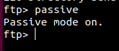
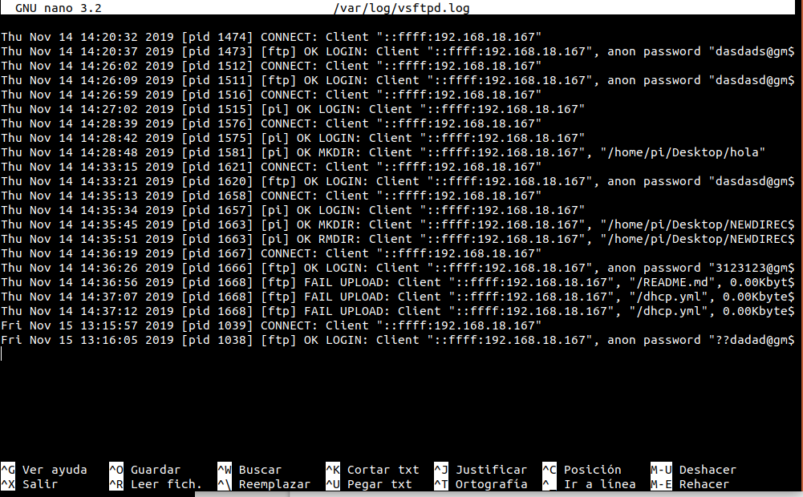
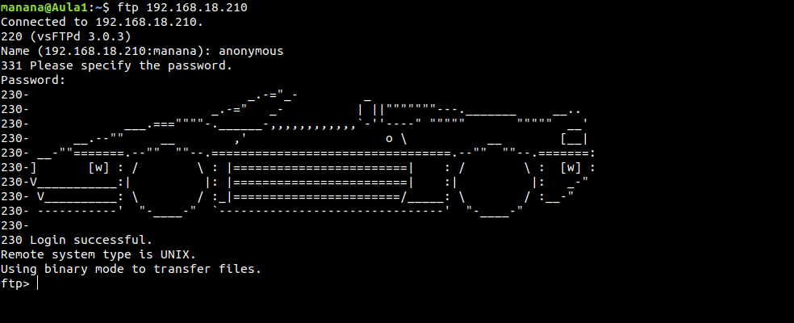
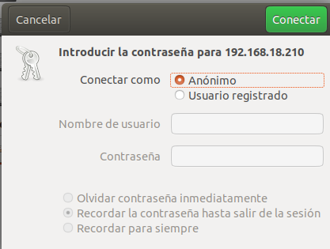

Instala el servidor vsftpd en la Raspberry Pi con que tenga
las siguientes caracteristicas:
-
Que sea un servidor FTP anónimo para descargas.

-
Que sea un servidor FTP para usuarios de sistema y que puedan tanto
descargar como subir archivos.

-
Funcione en modo pasivo.

-
Habilita los logs.

-
Cambia el mensaje de bienvenida.
Pantallazos:
Logs de acceso al servidor FTP.


Pantallazo
que demuestre que se ha cambiado el mensaje de bienvenida.
Pantallazo del
WireShark que demuestre que esta funcionando en modo pasivo.



Pantallazo
de acceso en modo consola y en modo gráfico.